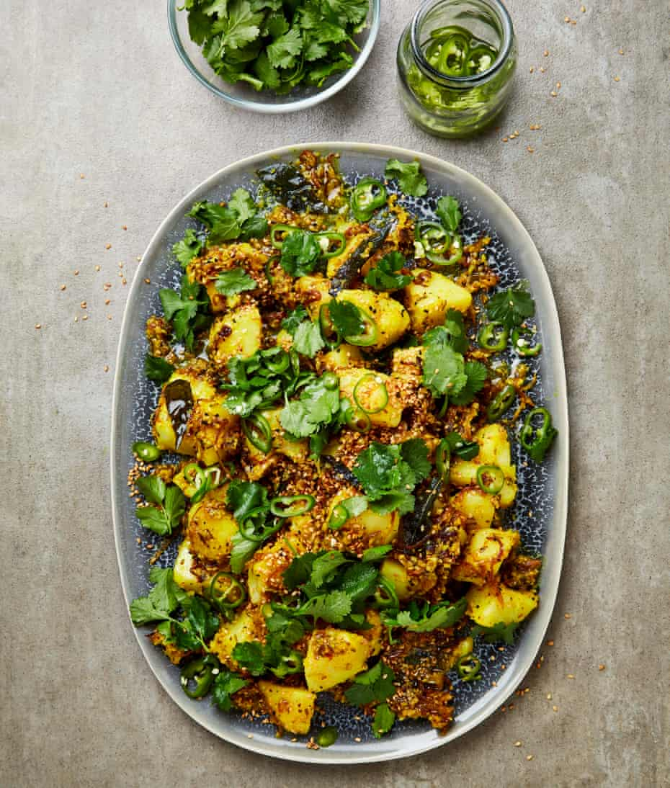

Nepalese potato salad

Everyone who loves potato salad thinks their version is the best, so thanks to Chaya’s friend Neha for sharing her favourite Nepalese version, which celebrates tangy tamarind and fresh coriander, and letting my team play around with it. If possible, do start off with tamarind from a block, because homemade puree is so much more balanced (tangy, but less acidic) than many ready-made ones. This works really well as a standalone dish, served with some yoghurt, but it also goes with simply grilled meat, fish and even aubergine.
For the chilli pickle
For the potatoes
For the spice mix
In a small, non-reactive bowl, mix the chillies with the vinegar, a quarter-teaspoon of salt and the sugar, and set aside to pickle (if you like, do this up to a day ahead).
Put two and a half litres of water and three tablespoons of salt in a large saucepan and set on a high heat. Bring to a boil, add the potatoes and cook for 20 minutes, until tender but not broken down, then drain.
Meanwhile, melt the ghee in a large saute pan on a medium-high heat, then add the onion, curry leaves, garlic and chopped coriander, and fry, stirring regularly, for 15 minutes, until the onions are soft and starting lightly to caramelise.
In the small bowl of a food processor or mortar, coarsely grind the mustard, nigella and sesame seeds, add to the onion pan with the turmeric and fry for a minute. Stir in the tamarind paste, take the pan off the heat, then gently stir in the potatoes until well coated in the spiced onion mixture and set aside for five minutes to absorb the flavours.
Transfer the potatoes to a large platter, or individual plates, scatter the pickled chillies, toasted sesame seeds and reserved coriander on top and serve warm or at room temperature.